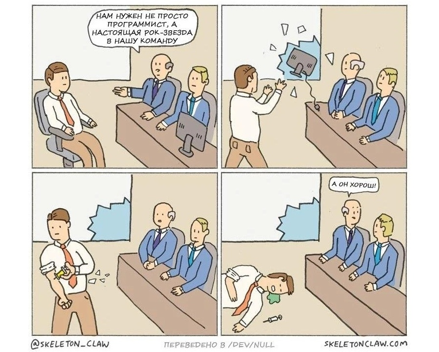

Собеседование - что ты такое?
Как посчитать вагоны в поезде-кольце, почему люки круглые, трава зеленая, а небо голубое...Таким было мое собеседование в большую и известную компанию, была куча задачек на сообразительность и ни одного вопроса про бэкенд, базы данных и python. Обычно собеседование выглядит с точностью наоборот, состоит из ряда технических вопросов, нескольких задач и рассказе о вашем опыте работы.
Собеседование — это не какой-то черный ящик, в котором спрятаны неизвестные вопросы и задачи, оно имеет определенную структуру и преследует одну цель - оценить ваши знания, опыт, и дать ответ подходите ли вы на рассматриваемую вакансию.
За время своей карьеры я сумел успешно пройти ряд собеседований, но некоторые из интервью были с треском провалены. Большое количество собеседований были проведены мною в качестве интервьюера. Мой основной опыт это серверная разработка, поэтому я буду рассматривать собеседование на примере вакансии Python программиста.
Я не дам вам волшебного рецепта как легко и просто пройти собеседование. Также, не будет и списка из тысячи и одного вопроса который надо знать, чтобы успешно пройти интервью, но будут различные рекомендации: на что стоит обратить внимание при подготовке к собеседованию, как улучшить резюме, как не сесть в лужу во время интервью.
Собеседование с HR

Прежде чем вы попадете на техническое интервью, вам предстоит пройти собеседование с HR. Его цель: на основе общих базовых вопросов понять, стоит ли приглашать вас на техническое интервью и дать предварительную оценку в какую группу кандидатов вас отнести (подходите ли вы под условного мидла и т.п.).Также, он уточняет ваши финансовые ожидания, соответствуют ли они бюджету вакансии.
Если на собеседование вас позвал HR - первый уровень отбора успешно пройден.
Вас пригласили или вы откликнулись на вакансию сами.
Есть ли разница на техническом интервью? Короткий ответ — нет.
Со стороны работодателя можно условно разделить резюме кандидатов на две категории: "горячие" и "холодные". В первом случае кандидат сам откликнулся на вакансию, во втором HR нашел кандидата и пригласил пройти собеседование. Не стоит ожидать "особого отношения", если вас на собеседование пригласил HR. В большинстве случаев интервьюер даже не знает о том, как вы к нему попали, у него нет заинтересованности принять на работу именно вас. На техническом интервью главная задача оценить уровень ваших знаний и умений, определить соответствуют ли они вакансии.
Большие компании с громким именем и маленькие фирмы
Можно разделить места работы на две группы - "большие компании с громким именем" и "маленькие фирмы". Особенность первых в том, что в них налажены процессы работы с кандидатами. Есть определенный поток претендентов и есть люди которые ответственны за проведение технической части собеседования. Есть внутренний регламент, в котором перечислены темы (и вопросы) для интервью: что спрашивать у кандидатов определенного уровня? Как их оценивать? Что ожидается от кандидатов разного: Junior / Middle / Senior?
На вакансию "Python разработчик" могут рассматриваться кандидаты как "мидл", так и "джуниор" уровня. Одна вакансия иногда содержит в себе сразу несколько внутренних вакантных мест из разных команд, которые рассматривают кандитов разного уровня.
Интервью иногда разделяется на несколько этапов, но чаще всего оно будет одно, состоящее из нескольких частей. Будет одно техническое интервью или отдельные этапы собеседования по алгоритмам, архитектуре и т.д. (этот вопрос лучше всего предварительно узнать уточнив HR)
Про более мелкие фирмы можно сказать, что им достаются крошки со стола, т.к. значительная часть кандидатов устраивается в большие фирмы. Ваша оценка сильно зависит от его личного мнения и ожиданий интервьюера, он может быть более заинтересован в кандидате, т.к. рассматривает его как коллегу к себе в команду.
Никто не читает резюме.
Точнее его читают, но тут надо разобраться как, когда и для чего.
Собеседование проводит тимлид или опытный разработчик, у которого есть основная деятельность, а проведение собеседований скорее всего является дополнительным занятием, поэтому время на то, чтобы внимательно прочитать ваше резюме у него не будет (и так полно других дел). Ваше резюме могут просмотреть по диагонали, когда собеседование будут добавлять в календарь, также его могут посмотреть прямо перед интервью или увидеть первый раз прямо во время собеседования (его посмотрят, чтобы сориентироваться какие вопросы стоит вам задать).
Когда я смотрю чужие резюме, то обращаю внимание на следующие вещи:
- последнее место работы кандидата, чем он там занимался;
- какой общий опыт со стеком из вакансии (общий опыт с языком программирования, БД и т.д.);
- далее я смотрю, на образование - есть ли профильное высшее;
- следом я смотрю на наличие курсов, например, когда указан курс "Объектно-ориентированное программирование", я буду ожидать от кандидата, что он сумеет рассказать про множественное наследование (и другие вопросы). Но порой, в резюме указан пройденный курс, а в ответ на вопросы: ни бе, ни ме, ни кукареку;
- если есть ссылка на github, то мне интересно, что там: "песочница с учебными проектами джуна", или вы контрибьютер в open source;
- когда список языков, баз данных, фреймворков и т.п. излишне подробный, состоящий из 50+ пунктов, где смешались в кучу кони, люди - создается скорее негативное впечатление, особенно если у кандидата скромный опыт работы.
Не стоит приукрашивать ваше резюме, в нем должно быть только то, что вы действительно знаете и умеете.
Когда не могут рассказать про проект и говорят про NDA, то создается ощущение, что вы делали парсер авито (или ставки на спорт), а не что-то крутое и секретное (оно может быть ошибочным, но первое впечатление такое).
К собеседованию стоит относиться как к экзамену
Если не подготовиться, то собеседование легко завалить.
Cобес очень похож на экзамен: вам задают вопросы, дают задачи для решения и по итогу поставят оценку вашим знаниям. От того как хорошо вы себя покажете, зависит итоговое решение, подходите ли вы на данную позицию.
Но может быть и обратная ситуация: ваша квалификация превышает требования и вам могут отказать из опасений, что вскоре работа станет скучной и вы захотите поменять ее на технически более интересную, чем предложенная.
Надо понимать, что основная ваша цель - не просто успешно пройти собеседование, а иметь достаточно скиллов для выполнения работы на новой позиции.
Техническое интервью (вопросы и задачи)
Рассказ о себе
Один из первых вопросов скорее всего будет: расскажите про свой опыт (или про последнее место работы).
Чтобы подготовить свой ответ, стоит задать себе следующие вопросы:
- Чем я занимался на последнем месте работы, что интересного, сложного или важного было мною сделано?.
- Какие технологии использовались на последнем месте работы?
- Какую самую сложную технически задачу я решил за свою карьеру?
- Какую самую важную проблему (со стороны бизнеса) я решил?
- Мой основной язык программирования, библиотеки, БД и т.д. - насколько хорошо я их знаю, что я могу рассказать про свой опыт работы с ними?
- Мое самое крупное фиаско?
Если на одном из предыдущих мест работы был более релевантный опыт, чем на последнем месте, то обязательно стоит сказать о нем.
Вопросы на собеседовании
Не обязательно отвечать на абсолютно все вопросы на интервью, всегда может быть задан тот вопрос на который вы не знаете ответ, с которым вы не сталкивались в работе или не интересовались. Если вы что-либо совсем не знаете, то об этом лучше прямо сказать и перейти к другому вопросу. У интервьюера нет зловещей цели завалить вас, он хочет узнать с чем вы сталкивались в работе и что знаете по различным темам.

Вопросы на собеседовании могут сильно различать, но их условно можно разделить на следующие группы:
язык программирования, фреймворки и библиотеки Можно выделить вопросы про сам язык, особенности его синтаксиса и детали его реализации, как он устроен под капотом.
Если вы в резюме указали библиотеку или фреймворк, то стоит быть готовым ответить на несколько вопрос по ней. Как пример: очень странно выглядит когда кандидат указал в резюме DRF, но не может ответить, что это такое, как и для чего он использовали в вашей команде.
базы данных
Данные самая важная вещь, она намного важнее, чем код вашего приложения, поэтому стоит понимать как данные хранятся в БД и как база данных выполняет и оптимизирует доступ к ним. SQL де-факто является стандартом для запросов к базам данных. Знание и умение писать запросы к БД без использования ORM библиотек является очень важным для разработчика, также стоит иметь представление о том как БД выполняет запросы, как запросы можно оптимизировать, какие индексы существуют, чем отличаются разные БД и многое другое.
алгоритмы
Требования могут сильно различаться, иногда может быть отдельное интервью по этой теме. Но часто это просто несколько вопросов и простая задача, чтобы можно было понять, знакомы ли вы с Big O notation, можете ли отличить O(n) и O(n2).
общие вопросы
Стоит ожидать различные вопросы по разным смежным темам: могут быть несколько вопросов про HTTP, dns, ngnix и очень многим другим темам. Их цель понять, на сколько хорошо вы знаете не только сам язык программирования но другие вещи, которые необходимы для работы, что вы понимаете как обрабатывается запрос от момента когда, пользователь "нажал кнопку" до момента того как он увидит результат ответа полученный с сервера.
паттерны программирования используемые в языки и ООП
Самое главное - это знание стандартных шаблонов проектирования которые применяются в языке, а также понимание базовых принципов ООП применительно к вашему языку программирования.
архитектура
Для позиций middle+ и senior стоит ожидать различных вопросов по архитектуре и проектированию ПО, ведь от вас на работе будут ожидать не просто выполнения задачек из jira, но умение спроектировать и реализовать новый сервис.
Задачи
Можно выделить следующие группы практических заданий:
- задачи на знание языка программирования, где вам предстоит написать код для решения какой-либо простой задачи, чтобы увидеть на сколько свободно вы владеете языком, и хорошо знаете его синтаксис
- задачи по алгоритмам, где предстоит реализовать решения задания наиболее оптимальным путем и умение оценить его сложность
- задание по SQL, где вам предстоит написать запрос, будут смотреть умеете ли вы работать с базой данных без использования ORM библиотек
- проектирование архитектуры, вам могут дать задачи/проблему и д
Что не стоит делать
Совсем не готовиться к собеседованию.
Даже если вы хорошо знаете язык программирования и другие темы, стоит открыть какой-либо список с вопросами, чтобы попробовать своими словами ответить на вопрос, т.к. не часто приходится что-либо рассказывать кому-то другому (например, объяснять, что такое дескриптор в python)
Не обязательно решать кучу задач на hackerrank (или аналогах), но решить пару простых задчек все-таки стоит. Во время работы мы не пишем код под чьим-то пристальным наблюдением и не зажаты в десятиминутные рамки, да и задачи на интервью разительно отличаются от тех, что находятся в jira. Поэтому, предварительно стоит включить таймер и решить задачу-другую оценивая себя со стороны, чтобы live coding часть не поставила вас в тупик.
Не стоит проходить собеседование сильно уставшим.
В пятницу вечером, в конце дня, не лучшее время для того, чтобы бодро и энергично соображать и отвечать на различные вопросы. По-возможности выбирайте время в первой половине дня, в начале рабочей недели.
Общаться без видео.
В "zoom" интервью собеседующий ожидает видеть кандидата, а не общаться с безликим голосом из ноутбука. Визуальный контакт, опрятный и уверенный внешний вид сыграют вам на руку.
Подключаться на встречу с телефона.
Это выглядит как несерьезное отношение к собеседованию. Одна из частей интервью требует решения пары задачек, а подключившись с телефона - вы не сможете их выполнить, а без их выполнения вас - не воспримут всерьез.
Опаздывать на встречу
Заведите себе будильник, чтобы не пропустить встречу. Заблокируйте время в календаре. Если при форс-мажоре заранее попросить перенести интервью, то вам пойдут на встречу, но если вы не придете или несколько раз его перенесете, то стоит ожидать, что вам просто откажут и ваше резюме больше не будут рассматривать.
Про софт скиллы
Однозначно, грамотная речь и уверенно звучащие ответы на вопросы создают большое впечатление. Исходя из опыта проведения собеседований совместно с другим интервьюером, иногда из-за уверенной манеры речи мой коллега при подведение итогов "прощал" или не замечал пробелы в базовых вещах. Но я стараюсь при оценке отдельно оценить технические навыки и soft-скиллы.
Иногда кандидаты сильно приукрашают свой опыт стараясь подать себя с выгодной стороны, это хорошее стремление, но все-же старайтесь адекватно оценивать свой опыт работы и уровень знаний.
Удачи!
Полезные ссылки
- https://github.com/DopplerHQ/awesome-interview-questions#python
- https://github.com/arialdomartini/Back-End-Developer-Interview-Questions